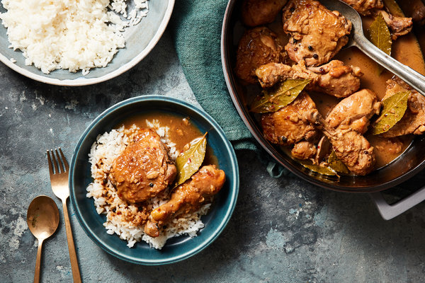

Chicken Adobo with Coconut Milk

Tangy vinegar, sweet coconut milk, and the umami of soy sauce perfectly balances this alternative take on chicken adobo. Silky, comforting, but with lots of flavor, this is the perfect dish for a rainy day.
Ingredients
- 2 tablespoons coconut oil
- 15 garlic cloves, roughly chopped
- 2 teaspoons whole black peppercorns
- 4 pounds of bone-in, skin-on chicken drumsticks and thighs
- 1 cup unsweetened coconut milk
- 1/2 cup coconut vinegar (or white vinegar)
- 1/2 cup soy sauce
- 8 fresh bay leaves
- Cooked rice
Steps
- Add chicken, garlic, peppercorns, soy sauce, vinegar, and bay leaves and 1 cup of water to a large pot. Let marinate for at least 3 hours (ideally 12+ hours)
- Heat pot until mixture boils.
- Reduce heat to medium low and simmer, stirring occasionally, for about 1 hour.
- Increase temperature to medium high and cook, stirring occasionally, until sauce is thickened, about 15 minutes. Serve chicken and sauce over rice.